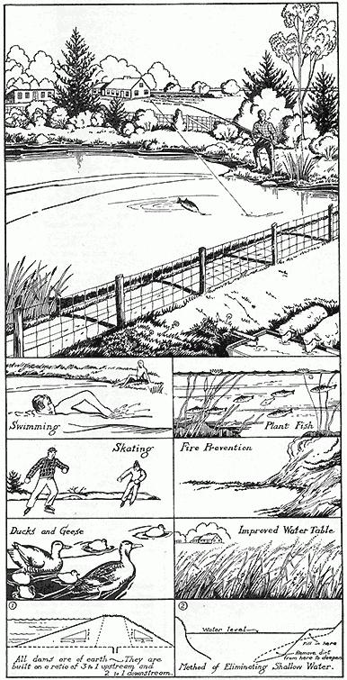

HAVING a fish pond in your back yard seems almost too good to be true. But Government experts say you can easily build a pond for as little as $100, and that a one-acre fertilized pond will normally yield by hook and line "something like 40 or 50 one-pound bass and about 600 to 800 quarter-pound sunfish each year".
We were surprised to learn that you don't need a stream or brook to have a fish pond. In fact, experts say it's better not to build your pond by damming a brook because the pond is too easily destroyed by floods. They recommend excavating a naturally low area using the run-off from the surrounding terrain as the source of water. Or you can use a spring or well. The pond should be 6 to 12 feet deep to protect the fish from freezing and possible drought.
Over 7,000 farmers grow fish in their own ponds. You stock a fertilized pond in Spring or Fall with fingerlings of bluegill sunfish and large-mouth bass and you can fish them out after 4 to 12 months. The fingerlings are obtained free or at a small cost from State Hatcheries or from the U. S. Fish arid Wildlife Service. Some states, Ohio for one, will practically build the pond for you.
To keep plenty of fish growing in the pond the experts have worked out a fascinating "food chain". First you distribute about 100 pounds of regular 8-8-4 crop fertilizer in the water. After a few days the water will take on a brown or greenish tinge which means the fertilizer has caused the growth of microscopic plants called algae on which young sunfish thrive. Then (in Spring or Fall) stock a one-acre pond with about 800 fingerlings of sunfish and 100 of bass. The sunfish live on the algae and the bass live on young sunfish. This food chain will continue producing fish year after year so long as you keep the pond sufficiently fertilized and do plenty of fishing! It's impossible to catch too many fish by hook and line. In fact not fishing out enough sunfish may result in too many for the amount of algae and the sunfish won't grow to eating size. The same will happen if there aren't enough bass to eat the young sunfish. For more variety you can also grow bullheads, pickerel, and other fish, but stocking must not be done indiscriminately or it may upset the whole balance in the food chain.
A permanent drainpipe in the dam facilitates draining; if pipe is large enough fish pass through so you can catch them the "easy way." Young trees, shrubs and grass planted around the pond make cover for wild life.
P. S. from Carolyn R.
Personally I don't want to go swimming in any old brown water full of algae, but as a fish pond it sounds wonderful and I hope we can build one!
|
 |
|
|